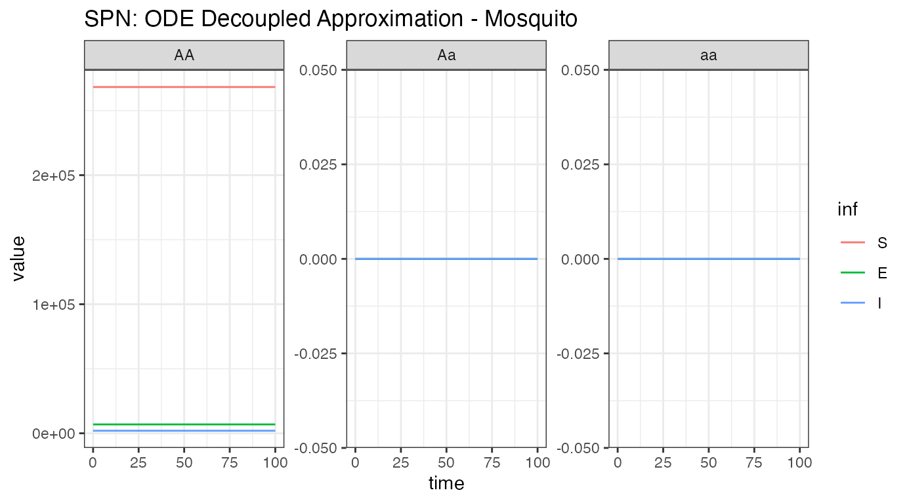
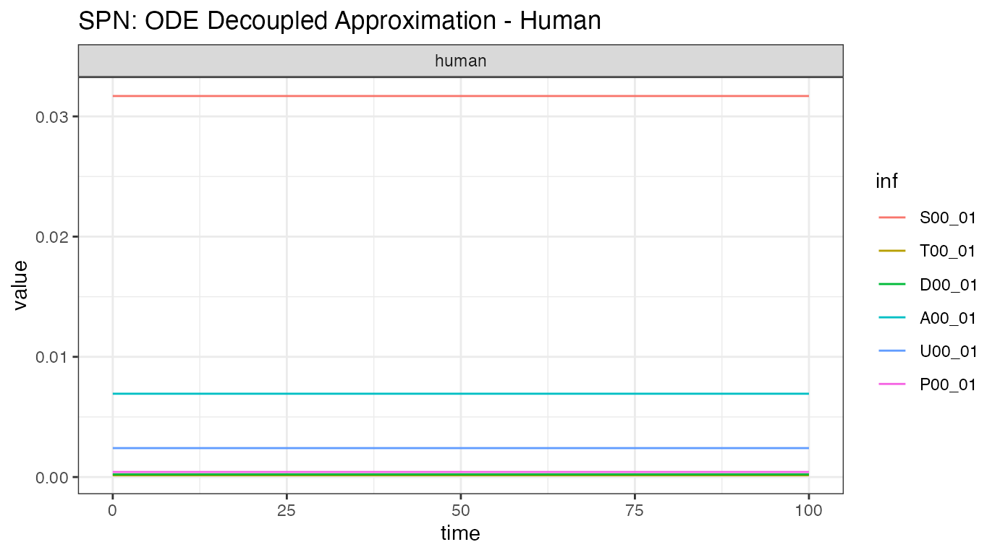
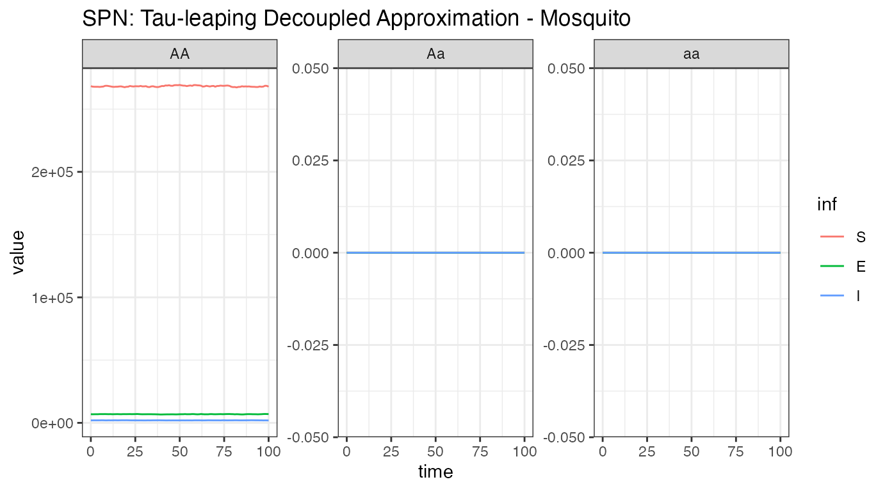
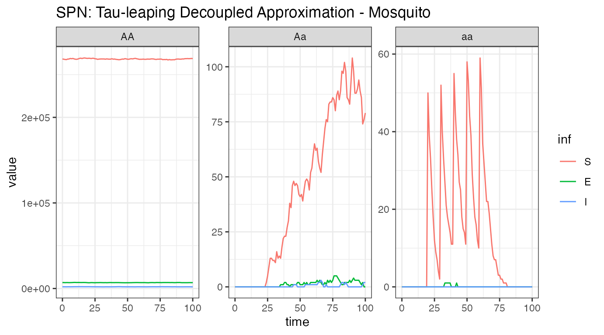
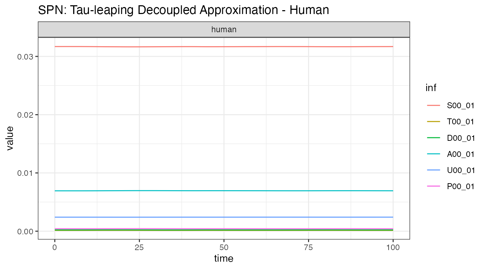

MGDrivE2: One Node Epidemiological Dynamics - Decoupled Imperial Sampling
Source:vignettes/epi-node-Imperial-decoupled.Rmd
epi-node-Imperial-decoupled.RmdTable of Contents
- Parameterization
- Initialization of the Petri Net
- Equilibrium Conditions and Hazard Functions
- Simulation of Fully Specified SPN Model
- References
Preface
In this vignette, we show how to set up and run MGDrivE2 simulations that utilize the SEI (Susceptible-Exposed-Infectious) mosquito model of epidemiological dynamics coupled to the Imperial human model of epidemiological dynamics. The SEI mosquito model uses an Erlang-distributed incubation (E) period to approximate general non-exponential dwell times in the E state. The Imperial model, originally described in 2010, provides a somewhat complex formulation of malaria transmission dynamics including more states than an SIS approach and population-level immunity. Here we will use an age-structured version, with a plan to expand to biting heterogeneity later on. In this formulation, the stochastic mosquito model is separated from the deterministic, human Imperial model. The two pass data between each other throughout the course of the simulation. See Griffin et al (2010) for a full formulation of the model.
We start by loading the MGDrivE2 package, as well as the MGDrivE package for access to inheritance cubes and ggplot2 for graphical analysis. We will use the basic cube to simulate Mendelian inheritance for this example.
Parameterization
Several parameters are necessary to setup the structural properties
of the Petri Net, as well as calculate the population distribution at
equilibrium, setup initial conditions, and calculate hazards. Again, we
specify all entomological parameters as for the mosquito-only simulation
(see “MGDrivE2: One Node Lifecycle
Dynamics”) as well as additional parameters for the Imperial
transmission dynamics. Like the aquatic stages,
will give the mean dwell time for incubating mosquitoes, and variance by
.
In addition to the entomological parameters required by MGDrivE, the set
of input parameters to the Imperial model is shown below. The function
imperial_model_param_list_create outputs the base set of
parameters, and each parameter can be individually modeled. See the
source code or appendix text of the provided paper to vary individual
parameters. Without any input, the default set of parameters is
returned. Then, the function
equilibrium_Imperial_decoupled_human calculates the
equilibrium values of humans distributed across infection states and age
compartments, alongside FOIv, which is used to generate initial
conditions in the MGDrivE SPN.
The parameters required by
equilibrium_Imperial_decoupled_human are:
| Parameter | Description |
|---|---|
age_vector |
A vector describing the age compartments from which to build the model |
ft |
The proportion of cases which receive treatment (0 <= ft <= 1) |
EIR |
The desired annual entomological innoculation rate |
imperial_params |
Base parameters for Imperial model, output from
imperial_model_param_list_create function |
Each mu parameter refers to the mortality rate in that
mosquito lifecycle stage. Additionally, we specify a total simulation
length of 250 days, with output stored daily. NH, the total
number of humans in the simulation, must also be specified.
# generate default set of entomological and epidemiological parameters
theta <- imperial_model_param_list_create()
# age distribution of the population
age_vector <-
c(0,
11 / 12,
1,
4,
5,
14,
15,
59,
60)
ft <- 0.4 # percent of symptomatic cases that are treatedInitialization of the Petri Net
The Imperial disease transmission model sits “on
top” of the existing MGDrivE2 structure, using the
default aquatic and male “places”, but expanding adult female “places”
to follow an Erlang-distributed pathogen incubation period (called the
extrinsic incubation period, EIP). Information on how
to choose the proper EIP distribution can be found in
the help file for ?makeQ_SEI().
The transitions between states is also expanded, providing
transitions for females to progress in infection status and allowing
interaction between mosquito and human states through decoupled
sampling. All of these additions are handled internally by
spn_T_epiSIS_node(). Since only the mosquito portion is
stochastic, the SPN will only include the mosquito states. Human states
will be handled by the sampling algorithm in the form of a deterministic
ODE, the human_Imperial_ODE function.
# Places and transitions
SPN_P <- spn_P_epi_decoupled_node(params = theta, cube = cube)
SPN_T <- spn_T_epi_decoupled_node(spn_P = SPN_P, params = theta, cube = cube)
# Stoichiometry matrix
S <- spn_S(spn_P = SPN_P, spn_T = SPN_T)Equilibrium Conditions and Hazard Functions
Now that we have set up the structural properties of the Petri Net, we need to calculate the population distribution at equilibrium and define the initial conditions for the simulation.
The function equilibrium_SEI_decoupled_mosy() calculates
the equilibrium distribution of female mosquitoes across
SEI stages, based on human populations and
force-of-infection, then calculates all other equilibria. We set the
logistic form for larval density-dependence in these examples by specify
log_dd = TRUE. We also need to augment the cube with
genotype specific transmission efficiencies; this allows simulations of
gene drive systems that confer pathogen-refractory characteristics to
mosquitoes depending on genotype. The specific parameters we want to
attach to the cube are b0 and cT,
cU, and cD the mosquito to human and human to
mosquito transmission efficiencies. We assume that transmission from
human to mosquito is not impacted in modified mosquitoes, but mosquito
to human transmission is significantly reduced in modified mosquitoes.
b0 represents the mosquito-to-human transmission
probability in absence of any immunity. cT represents the
human-to-mosquito onward infectivity transmission from humans in the
T state in the Imperial model (treated but still
infectious). Similarly cU represents the onward infectivity
from humans in the U state (untreated subpatent infection),
and cD represents the onward infectivity from the
D state (clinical disease). Each of these must be specified
per genotype to characterize reductions in transmission from humans to
mosquitoes by different genotypes. This updating of the inheritance cube
is handled in equilibrium_Imperial_decoupled.
# Modify parameters with IRS and LLIN coverage
IRS_cov <- 0.2
LLIN_cov <- 0.3
theta <- add_interventions(theta, IRS_cov, LLIN_cov)
# calculate a target EIR from a given prevalence
prevalence <- 0.7
eir <- convert_prevalence_to_eir(prevalence, age_vector, ft, theta)
# calculate human and mosquito equilibrium
# this function updates theta and the cube and returns initial conditions
eqm <- equilibrium_Imperial_decoupled(age_vector, ft, eir, theta, cube, SPN_P)
# extract updated theta and full set of initial conditions
theta <- eqm$theta
cube <- eqm$cube
initialCons <- eqm$initialConsWith the equilibrium conditions calculated (see
?equilibrium_SEI_SIS()), and the list of possible
transitions provided by spn_T_epiSIS_node(), we can now
calculate the rates of those transitions between states.
# approximate hazards for continuous approximation
approx_hazards <- spn_hazards_decoupled(spn_P = SPN_P, spn_T = SPN_T, cube = cube,
params = theta, type = "Imperial",
log_dd = TRUE, exact = FALSE, tol = 1e-8,
verbose = FALSE)
#> --- continue ---Simulation of Fully Specified SPN Model
Deterministic: Decoupled ODE model
To first demonstrate that the system is indeed at equilibrium, we show the deterministic solution using decoupled ODE sampling without events.
dt <- 1
ode_out <- sim_trajectory_R_decoupled(
x0 = initialCons$M0,
h0 = initialCons$H,
SPN_P = SPN_P,
theta = theta,
tmax = 100,
inf_labels = SPN_T$inf_labels,
dt = dt,
S = S,
hazards = approx_hazards,
sampler = "ode-decoupled",
events = NULL,
verbose = FALSE,
human_ode = "Imperial",
cube = cube
)
# summarize females/humans by genotype
ode_female <- summarize_females_epi(out = ode_out$state, spn_P = SPN_P)
ode_humans <- summarize_humans_epiImperial(out = ode_out$state, index=1)
# plot
ggplot(data = ode_female) +
geom_line(aes(x = time, y = value, color = inf)) +
facet_wrap(~ genotype, scales = "free_y") +
theme_bw() +
ggtitle("SPN: ODE Decoupled Approximation - Mosquito")
ggplot(data = ode_humans) +
geom_line(aes(x = time, y = value, color = inf)) +
facet_wrap(~ genotype, scales = "free_y") +
theme_bw() +
ggtitle("SPN: ODE Decoupled Approximation - Human")
### Stochastic: Tau Leaping Solutions {#soln_tau}As a further example, we run a single stochastic realization of the
same simulation, using the tau sampler with
,
approximating 10 jumps per day. As the adult male mosquitoes do not
contribute to infection dynamics, we will only view the adult female
mosquito and human dynamics here. We do not show events in this
simulation, as genotype-specific dynamics have not yet been
implemented.
# delta t - one day
dt_stoch <- 0.1
dt <- 1
# run ode-decoupled simulation
tau_out <- sim_trajectory_R_decoupled(
x0 = initialCons$M0,
h0 = initialCons$H,
SPN_P = SPN_P,
theta = theta,
tmax = 100,
inf_labels = SPN_T$inf_labels,
dt = dt,
dt_stoch = dt_stoch,
S = S,
hazards = approx_hazards,
sampler = "tau-decoupled",
events = NULL,
verbose = FALSE,
human_ode = "Imperial",
cube = cube,
maxhaz = 1e12
)
# summarize females/humans by genotype
tau_female <- summarize_females_epi(out = tau_out$state, spn_P = SPN_P)
tau_humans <- summarize_humans_epiImperial(out = tau_out$state, index=1)
# plot
ggplot(data = tau_female) +
geom_line(aes(x = time, y = value, color = inf)) +
facet_wrap(~ genotype, scales = "free_y") +
theme_bw() +
ggtitle("SPN: Tau-leaping Decoupled Approximation - Mosquito")
ggplot(data = tau_humans) +
geom_line(aes(x = time, y = value, color = inf)) +
facet_wrap(~ genotype, scales = "free_y") +
theme_bw() +
ggtitle("SPN: Tau-leaping Decoupled Approximation - Human")In the stochastic simulation, we see that both values drift around
equilibrium. Varying delta_t can provide a visual
understanding of how the underlying stochastic dynamics converge to the
ODE solution as delta_t -> 0.
Finally, we show a stochastic simulation with events.
Similar to previous simulations, we will release 50 adult females
with homozygous recessive alleles 5 times, every 10 days, but starting
at day 20. Remember, it is critically important that the event
names match a place name in the simulation. The simulation
function checks this and will throw an error if the event name does not
exist as a place in the simulation. This format is used in
MGDrivE2 for consistency with solvers in
deSolve. To see the effect on transmission of
genotype-specific releases, vary the c and b0
parameters in the inheritance cube (see line 187 of this vignette).
r_times <- seq(from = 20, length.out = 5, by = 10)
r_size <- 50
events <- data.frame("var" = paste0("F_", cube$releaseType, "_", cube$wildType, "_S"),
"time" = r_times,
"value" = r_size,
"method" = "add",
stringsAsFactors = FALSE)
tau_out <- sim_trajectory_R_decoupled(
x0 = initialCons$M0,
h0 = initialCons$H,
SPN_P = SPN_P,
theta = theta,
tmax = 100,
inf_labels = SPN_T$inf_labels,
dt = dt,
dt_stoch = dt_stoch,
S = S,
hazards = approx_hazards,
sampler = "tau-decoupled",
events = events,
verbose = FALSE,
human_ode = "Imperial",
cube = cube,
maxhaz = 1e12
)
# summarize females/humans by genotype
tau_female <- summarize_females_epi(out = tau_out$state, spn_P = SPN_P)
tau_humans <- summarize_humans_epiImperial(out = tau_out$state, index=1)
# plot
ggplot(data = tau_female) +
geom_line(aes(x = time, y = value, color = inf)) +
facet_wrap(~ genotype, scales = "free_y") +
theme_bw() +
ggtitle("SPN: Tau-leaping Decoupled Approximation - Mosquito")
ggplot(data = tau_humans) +
geom_line(aes(x = time, y = value, color = inf)) +
facet_wrap(~ genotype, scales = "free_y") +
theme_bw() +
ggtitle("SPN: Tau-leaping Decoupled Approximation - Human")